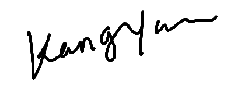

Kang Yan, Ph.D. candidate
Rapid MRI Research Group @ MeyerLab
wrr6ps@virginia.edu
Charlottesville, VA

Kang Yan, Ph.D. candidate
Rapid MRI Research Group @ MeyerLab
wrr6ps@virginia.edu
Charlottesville, VA

I am currently a Ph.D. student, studying Magnetic Resonance Imaging in Department of Biomedical Engineering at the University of Virginia, under the supervision of Prof. Craig H. Meyer . Before enrolling in the Ph.D. program at UVA, I worked in Prof. Yiping P. Du's lab at Shanghai Jiao Tong University as a master student. Outside of academia, I enjoy traveling, reading, watching movies, hiking, and swimming. #GoHoos!
I am interested in MRI acquisition and reconstruction, in particular: